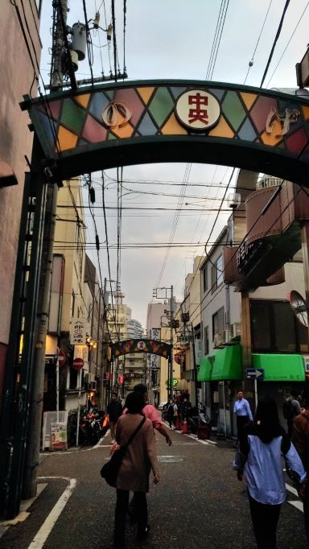
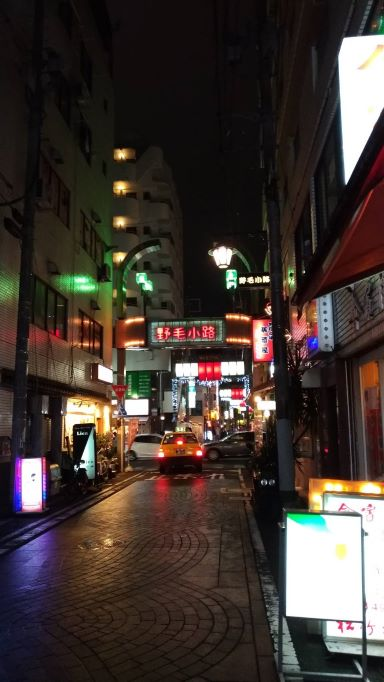
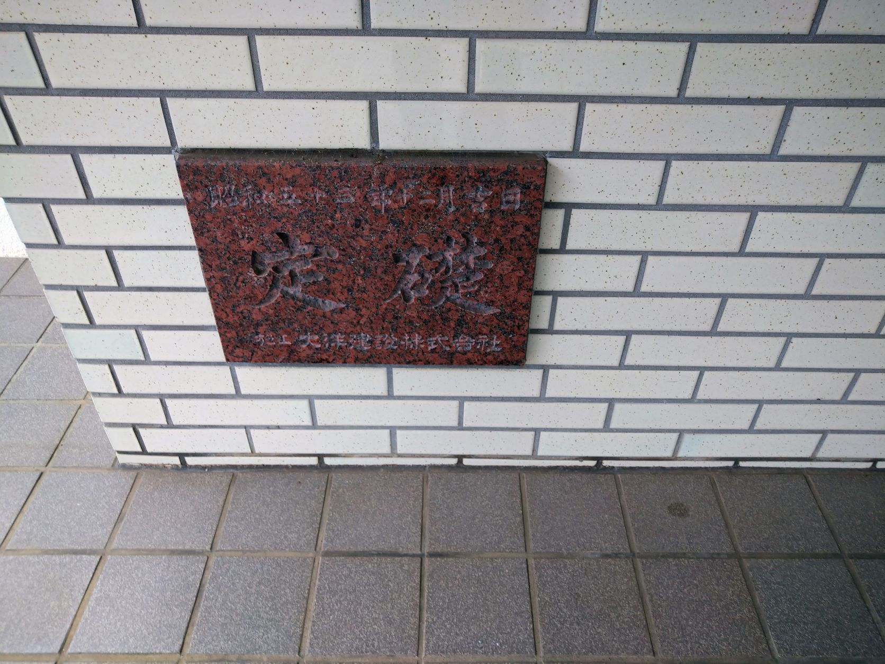

看板・サインを観察する
一枚目

場所：横浜 野毛
日時：2021/10/16
コロナ禍でなかなか外食どころか外出さえできない時期が長かったここ二年ほど。
久しぶりに家族そろって横浜まで外食した時の写真。
横浜に未だ残る下町感満載の看板が気に入ったので撮影しました。
二枚目

場所：横浜 野毛
日時：2021/10/16
一枚目の帰りに撮ったもの。
日が出てる間と印象が違ってまた面白く感じたので撮影。
都市の所謂なイメージとはまた違う顔の変わり方がとても好ましく映った。
三枚目

場所：横浜 汲沢
日時：2021/10/17
胃腸を壊したためかかりつけの内科を受診。
小さいころからなぜか定礎の文字と石碑が好きで、この課題には必ず入れようと思っていた。